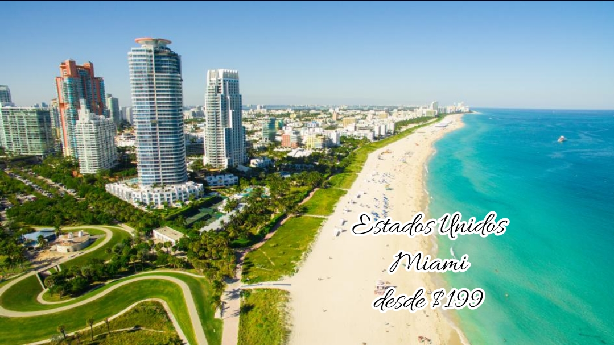
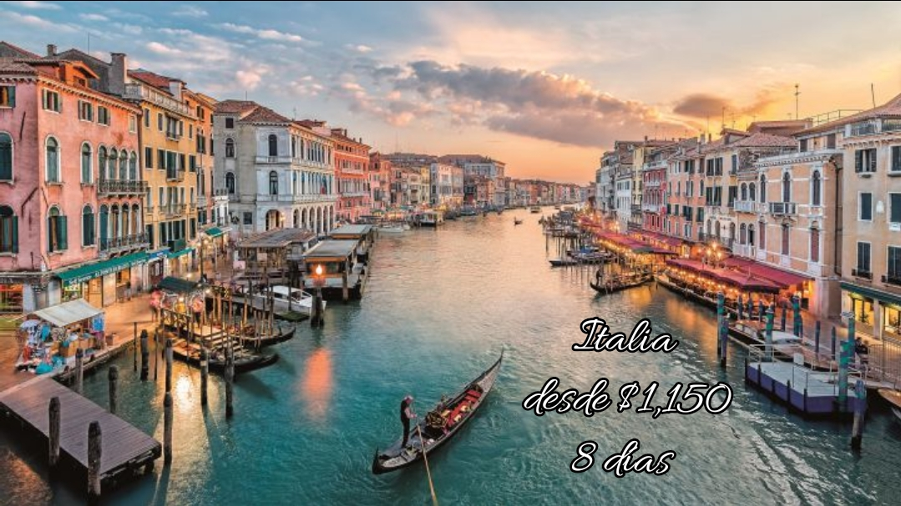
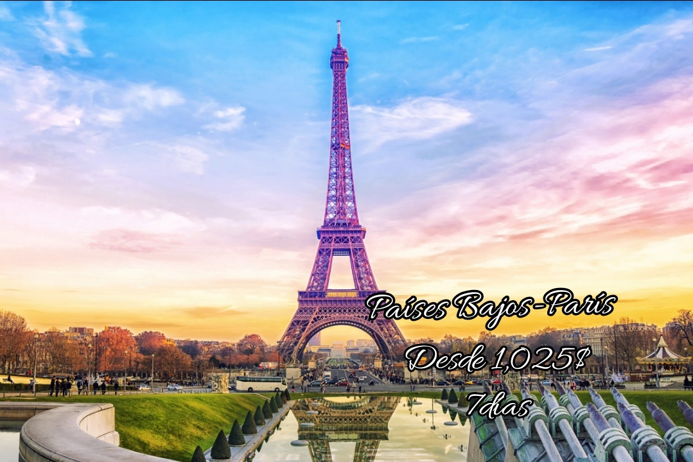
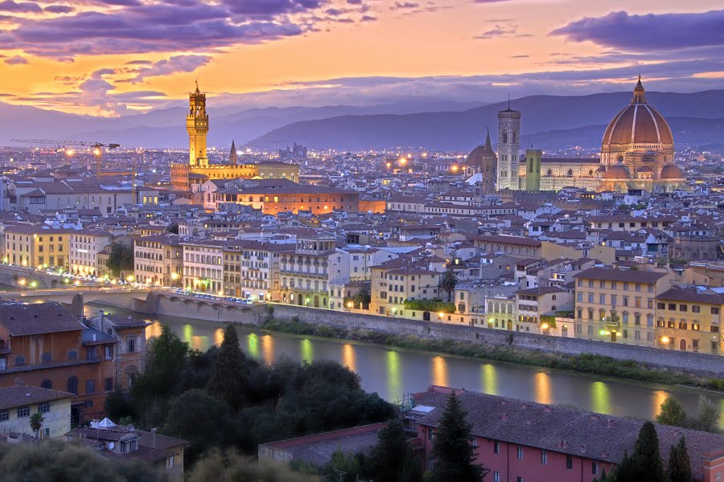
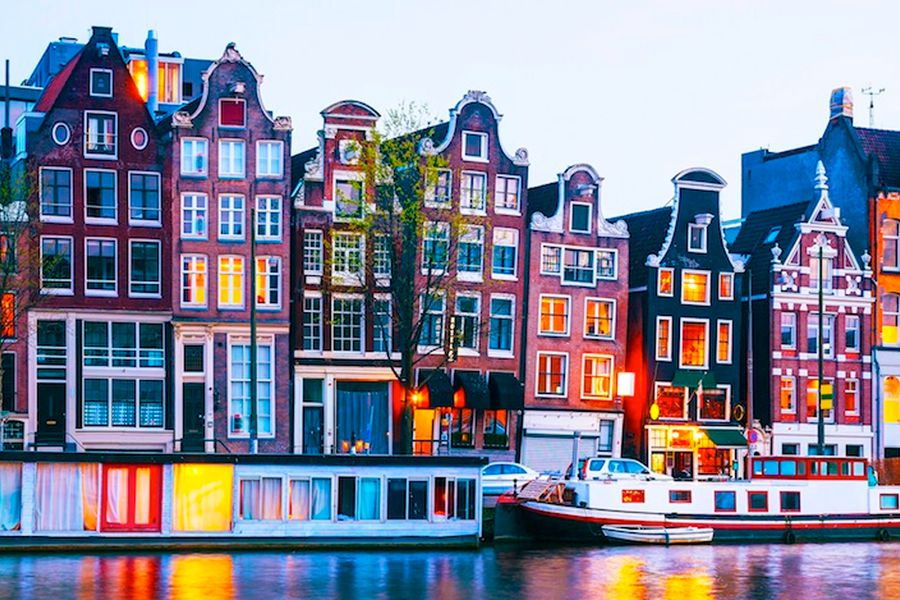

<!DOCTYPE html>
<html>
<head>
<title>Ofertas</title>
<font size="5" face="Century">
<h1 align="center">Ofertas Navideñas 2021</h1>
<hr size="7" color="#F770D2" width="70%" noshades>
</font>
<font size="5" color="black" face="Baskerville Old Face">
<a name="menu">Menú</a><br><br>

<div class="contenedor-imagenes">
<div>
  
</div>
<div>
  
</div>
<div>
   
</div>
<br>
<tr>
<table width="90%">
<td align="left"><a href="#Paises"><button id="boton" type="button">Saber más</button></td>
<td align="center"><a href="#Italia"><button id="boton" type="button">Saber más</button></td></td>
<td align="right"><a href="#Miami"><button id="boton" type="button">Saber más</button></td></td></a>
</tr>
</table>
</head>
<body>
<SCRIPT LANGUAGE="Javascript">
alert("¿Buscas un viajes?,estás en el sitio correcto")
</SCRIPT>

<font color="Black" size="4" face="Century">
<a name="Miami"><h2><big><i>Estados Unidos-> Miami</i></big></h2>
</font>
<hr size="7" color="#F770D2" align="left" width="40%" noshades>
<font size="5" color="Black" face="Baskerville Old Face">
<a href="#menu">Ir al inicio</a>
<p align="justify">
<br><br><br>
Desde $199 por persona.
<ul>
Paquete incluye: 
<li>5 días, 4 noches de alojamiento en el Hotel Doubletree by Hilton Miami Doral o Similar.</li> 
<li> Desayunos Buffet Diarios. </li>
<li> Wifi. </li>
<li> Asistencia de Viajes.</li>
</ul>
Notas importantes:
<ol>
<li>Tarifa por persona cotizada en base a 2 adultos.</li>
<li>Paquete válido del 24 al 28 de noviembre.</li>
<li>Sujetas a cambios y disponibilidad.</li>
<li>No incluye el pago de boletos.</li>
<li>Boleto aéreo con Copa es sin Maleta.</li>
<li>Separación con 125.00 por persona ** Aplican Restricciones **.</li>
</ol>
</p>
</font>
<font color="Black" size="4" face="Century">
<a name="Italia"><h2><big><i>Italia</i></big></h2>
</font>
<hr size="7" color="#F770D2" align="left" width="40%" noshades>
<font size="4" color="Black" face="Baskerville Old Face">
<a href="#menu">Ir al inicio</a>
<p align="justify">
EL PRECIO INCLUYE
<ul>
<li>Craslados aeropuerto - hotel - aeropuerto.</li>
<li>Transporte en autocar climatizado, según ruta indicada.</li>
<li>Alojamiento en hoteles previstos o similares en habitaciones dobles con baño o ducha.</li>
<li>Desayuno diario, excepto el primer día de viaje y el último, si el vuelo es muy temprano.</li>
<li>Guía acompañante de habla española todo el recorrido.</li>
<li>Cenas y almuerzos según itinerario (sin bebida).</li>
<li>Visitas con guía local y/o excursiones (según itinerario): 
Panorámica de Roma, Panorámica de Florencia, Paseo 
panorámico por la Laguna Veneciana, Panorámica de 
Milán.</li>
<li>Otros lugares comentados por nuestro guía (según itinerario): Asís, Pisa, Padua, Siena, Lago de Garda.</li>
<li>Seguro de viaje e IVA.</li><br>
</ul>
OPCIÓN TODO INCLUIDO
<p>Estos itinerarios pueden realizarse en la versión TODO INCLUIDO. Se suman a las comidas y visitas base del itinerario aquellas indicadas bajo la nomenclatura (Opción TI). 
En esta versión el programa ofrece 12 comidas en total y 
las siguientes visitas:
* Nápoles, Capri y Pompeya
* Basílica de San Pedro y Museos Vaticano</p>
</font>
<br><br><table border="5" align="left" width="100%">
</font>
<tr>
<th align="center"><font size="4" color="#4D9A00" face="Baskerville Old Face">Día</th>
<th align="center"><font size="4" color="#4D9A00" face="Baskerville Old Face">Actividad programada</th>
</font>
</tr>
<tr>
<td valign="middle" align="center"><font size="3" color="#4D9A00" face="Baskerville Old Face">Sábado.Roma</td>
<td valign="middle" align="center"><font size="3" color="" face="Baskerville Old Face">Llegada a Roma y traslado al hotel. Resto del día 
libre. Al final de la tarde, Cena y 
alojamiento</td>
</tr>
<tr>
<td valign="middle" align="center"><font size="3" color="#4D9A00" face="Baskerville Old Face">DOMINGO: ROMA (OPCIONAL A POMPEYA, NÁPOLES Y 
CAPRI</td>
<td valign="middle" align="center"><font size="3" color="" face="Baskerville Old Face">Desayuno. Día libre. Excursión (Opción TI) para conocer Pompeya y los magnífi cos restos arqueológicos de esta ciudad romana, seguida de una breve 
panorámica de Nápoles, navegaremos a la isla de 
Capri. (Almuerzo Opción TI). Alojamiento</td>
</tr>
<tr>
<td valign="middle" align="center"><font size="3" color="#4D9A00" face="Baskerville Old Face">LUNES: ROMA</td>
<td valign="middle" align="center"><font size="3" color="" face="Baskerville Old Face">Desayuno. Visita panorámica: el río Tíber, Castel 
Sant’Angelo, Isla Tiberina, Circo Máximo, Pirámide 
Cestia,
San Juan de Letrán, etc. Resto del día libre. Visita (Opción TI) de los Museos Vaticanos , la Capilla 
Sixtina, con “La Pietà. 
Almuerzo. En la tarde, excursión opcional de la 
Roma Imperial, dirigiéndonos al Valle del Coliseo 
para admirar el exterior del mayor anfi teatro del 
mundo romano, y realizaremos un recorrido por la 
Vía de los Foros Imperiales, para llegar a la colina 
del Capitolio. Seguidamente conoceremos, la Plaza 
Venecia, para desde allí recorrer la Roma Barroca, 
con las plazas más emblemáticas y las fuentes más 
representativas, (Cena Opción TI) y alojamiento.</td>
</tr>
<tr>
<td valign="middle" align="center"><font size="3" color="#4D9A00" face="Baskerville Old Face">MARTES: ROMA - ASÍS - SIENA - FLORENCIA</td>
<td valign="middle" align="center"><font size="3" color="" face="Baskerville Old Face">Desayuno. Salida hacia Asís, patria de San Francisco y tiempo libre para conocer las Basílicas, con sus 
magnífi cos frescos, y la tumba del santo. (Almuerzo 
Opción TI) y continuación a Siena, que tuvo la más 
fl oreciente banca de Italia en el S.XIII, y tiempo libre 
para conocer su centro histórico medieval, en el que 
destacan la Piazza del Campo, la Catedral, del s.XII, 
etc. Continuación a Florencia, la capital de la Toscana y cuna del Renacimiento. Cena y alojamiento.</td>
</tr>
<tr>
<td valign="middle" align="center"><font size="3" color="#4D9A00" face="Baskerville Old Face">MIÉRCOLES: FLORENCIA</td>
<td valign="middle" align="center"><font size="3" color="" face="Baskerville Old Face">Desayuno. Visita panorámica: el Duomo de Santa 
María del Fiore, el campanario, el Baptisterio, el 
Ponte Vecchio, la Plaza de la Signoria con el Palazzo 
Vecchio, etc. (Almuerzo Opción TI). Resto del día 
libre. Visita opcional de los museos fl orentinos. 
(Cena Opción TI) y alojamiento.</td>
</tr>
<tr>
<td valign="middle" align="center"><font size="3" color="#4D9A00" face="Baskerville Old Face">JUEVES: FLORENCIA - PISA - PADUA - VENECIA</td>
<td valign="middle" align="center"><font size="3" color="" face="Baskerville Old Face">Desayuno. Salida hacia Pisa. Tiempo libre para conocer la maravillosa Plaza de los Milagros con la catedral, el Baptisterio, y la Torre Inclinada. Almuerzo
en ruta, para llegar seguidamente a Padua y visitar 
libremente la Basílica de San Antonio. Cena y alojamiento en la región del Veneto.</td>
</tr>
<tr>
<td valign="middle" align="center"><font size="3" color="#4D9A00" face="Baskerville Old Face">VIERNES: VENECIA</td>
<td valign="middle" align="center"><font size="3" color="" face="Baskerville Old Face">Desayuno. Paseo panorámico en barco por la Laguna Veneciana para llegar, navegando, al corazón 
de Venecia. (Almuerzo Opción TI) y resto día libre. Se dará un 
paseo junto a nuestro guía local por la llamada “la 
Venecia Escondida”. (Cena Opción TI) y alojamiento en la región del Veneto</td>
</tr>
<tr>
<td valign="middle" align="center"><font size="3" color="#4D9A00" face="Baskerville Old Face">SÁBADO: VENECIA</td>
<td valign="middle" align="center"><font size="3" color="" face="Baskerville Old Face">Desayuno. Tiempo libre hasta la hora del traslado 
al aeropuerto para tomar el vuelo a su ciudad de 
destino. Fin de nuestros servicios. </td>
</tr>
</font>
</table>

<br>
<font color="Black" size="4" face="Century">
<a name="Paises"><h2><big><i>Países Bajos-->París</i></big></h2>
</font>
<hr size="7" color="#F770D2" align="left" width="40%" noshades>
<font size="5" color="#4D9A00" face="Baskerville Old Face">
<a href="#menu">Ir al inicio</a>
<p align="justify">
<br>
<b>PRECIOS EN USD POR PERSONA
ST20158 · Precio desde
1.025$ 7 días
2 comidas</b></p>
<ul>
<li>SALIDAS SEMANALES: 6 ABR / 26 OCT</li>
<li>SALIDAS QUINCENALES: 2 NOV / 22 MAR</li>
<li>ITIN. DÍAS COMIDAS DOBLE INDIVIDUAL</li>
ST20158 París - Ámsterdam<br>
</font>
<font size="4" color="Black" face="Baskerville Old Face">
EL PRECIO INCLUYE
<ol>
<li>Traslados aeropuerto - hotel - aeropuerto.</li>
<li>Transporte en autocar climatizado, según ruta indicada.</li>
<li>Alojamiento en hoteles previstos o similares en habitaciones dobles con baño o ducha.</li>
<li>Desayuno diario, excepto el primer día de viaje y el último, si el vuelo es muy temprano.</li>
<li>Guía acompañante de habla española todo el recorrido.</li>
<li>Cenas y almuerzos según itinerario (sin bebida).</li>
<li>Visitas con guía local y/o excursiones, Panorámica de París, Panorámica de Bruselas, Panorámica de Ámsterdam.
<li>Otros lugares comentados por nuestro guía: Brujas, 
Rotterdam, La Haya.</li>
<li>Seguro de viaje e IVA.</li>
</ol></p>
<br>
</font>

<br>
<table align="center" width="15%" CELLPADDING="1" CELLSPACING="1">
<tr>
	<td align="center" width="10" height="10"><a href="index.html" target="blank"></a></td>
</tr>
</table>

</body>
</html>